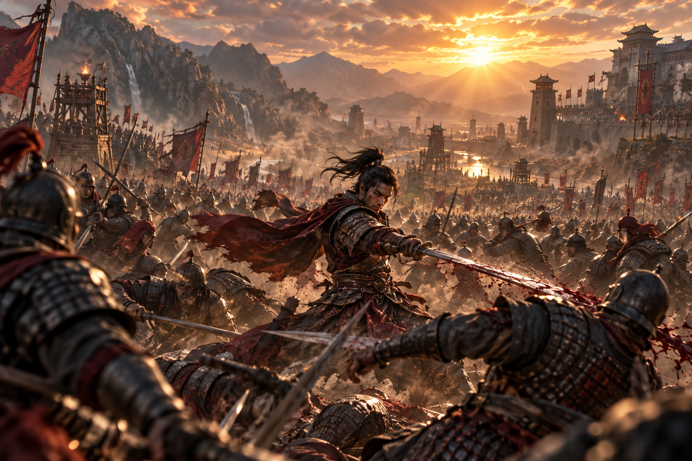

1位

Dynasty Warriors 3: Complete Edition Remastered
2001年に発売され「無双」ジャンルを確立した伝説的名作が、Unreal Engine 5で鮮やかに蘇った。40名以上の武将と「Xtreme Legends」の追加コンテンツをまるごと収録した完全版リマスター。新たなドッジ・カウンターアタック・武器フュージョンシステムが加わり、爽快感はそのままに現代基準の遊びやすさを実現。ローカル協力プレイも健在で、昔懐かしい戦場を最高の映像で駆け抜けられる。
おすすめ理由：懐かしさと進化を両立した「やり直し」ではなく「進化版」。新旧ファン問わず今すぐ手に取れる圧倒的ボリュームが魅力。